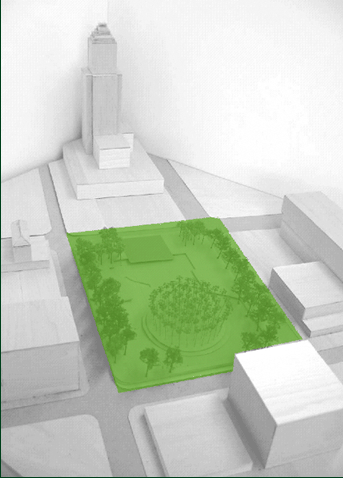

BACKGROUND
The site
The block, known as the old Caltrans site, is across the street from City Hall
and is formed by 1st and Main, 2nd and Spring streets. Other landmark neighbors
include the Los Angeles Times, the new Caltrans building and St. Vibiana’s.
Little Tokyo begins just one block east along 1st and 2nd streets; the Historic
Core downtown business and residential corridor unfolds along Main and Spring.
The old Caltrans buildings and several small businesses currently on the block are to be torn down as part of a land swap between the city and state. Ownership of the block will transfer to the city in 2005.
The idea for a park
Creating a civic square or park on this site has been discussed by Los Angeles
city officials and interested citizens for at least ten years. In 1997, the
council adopted a master plan for development of the city center (the Civic
Center Shared Facilities and Enhancement Plan, also known as the Diamond
Plan) that called for a civic plaza south of City Hall.
The late Ira Yellin, a visionary in downtown redevelopment, championed the idea. When it became clear that a land swap with the state would bring the block into city hands, designers and others – inspired by council motions indicating the block would become open space – began to envision what a park might look like. “Vision for a New Civic Square” by Urban Partners outlined steps needed to make a park a reality. LAHUB hosted a symposium and an independent design competition that drew entries from around the world.
In February 2004, with backing from Councilwoman Jan Perry and the J. Paul Getty Trust, landscape architects Campbell and Campbell drew up a park proposal showing a broad lawn, trees, reflecting pool and stunning Robert Smithson artwork in the form of a palm spiral. In May – just six weeks before the vote to build a police headquarters on the site – Councilwoman Perry created an advisory committee to help move forward planning for a park. Named as co-chairs were Adele Yellin and Aileen Adams.
Council action
The City Council voted June 23, 2004, to build a 500,000-square-foot police
headquarters on the block. There was virtually no public notice and no public
discussion of this site. The action was an amendment to another motion titled “Police
Headquarters Facility/ Exclude 1st and Alameda.” (file #03-0063-S5)
Current status
The city is moving forward with design of the Police Headquarters Facility,
including a major parking structure and motor pool on Main Street. An environmental impact report, as required by the California Environmental Quality Act, is being prepared. A grass-roots coalition of supporters of the park – lacivicpark.org – and
others are working to get plans for a park back on track.